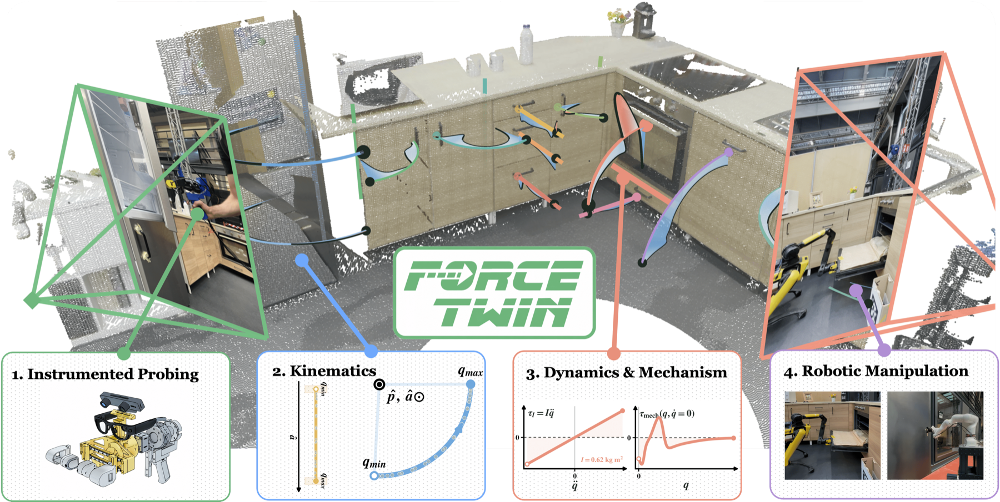

Physics-informed Digital Twins for Robotic Manipulation from Instrumented Human Interaction
1ETH Zurich 2NVIDIA 3Microsoft 4University of Bonn

Manipulating objects requires understanding not only their motion, but also the physical properties that determine it. For articulated objects, these include inertia, friction, and mechanisms such as springs or door closers, whose effects can vary with configuration and velocity. Such properties are not directly observable from appearance: visually identical doors may require very different effort to manipulate. Existing digital-twin pipelines recover primarily kinematics or assign static physical parameters from visual and language priors, which can yield physically implausible estimates. As a result, state-dependent mechanism dynamics remain unidentified and are not represented in standard asset formats. We present ForceTwin, a system for identifying physics-informed digital twins of articulated objects from instrumented human interaction. A person probes an object using a handheld force-sensing gripper, providing synchronized poses and interaction forces from which we estimate the articulation, parametric dynamics including inertia, Coulomb friction, viscous damping, and a structured neural residual capturing state-dependent mechanism forces. ForceTwin nearly halves the inertial-parameter error of a VLM prior. As a feedforward dynamics model for impedance control on a Spot and a Franka FR3, ForceTwin achieves 87% goal completion across nine object-embodiment pairs, compared with 60% using VLM-prior and 57% using kinematics-only twins, with the largest gains on objects whose strong mechanisms cause both baselines to stall.
Available once the preprint is online.